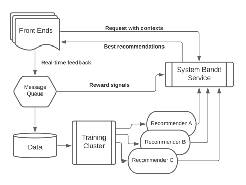
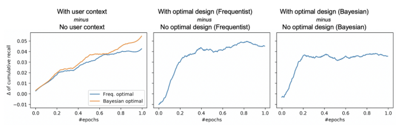

Towards the D-Optimal Online Experiment Design for Recommender Selection (面向推荐器选择的 D-最优在线实验设计)
- 会议/期刊: KDD 2021 (August 14–18, Virtual Event, Singapore)
- 作者与机构: Da Xu, Chuanwei Ruan, Evren Korpeoglu, Sushant Kumar, Kannan Achan（Walmart Labs）
- 推荐链路定位: 召回候选的在线流量分配/实验层（System Bandit Service，位于多个候选召回器之上）
- 研究方向: 强化学习与动态探索推荐 / 工业架构与去偏
- 论文原文: https://arxiv.org/abs/2110.12132v2
- 开源代码: D-optimal-recommender-selection
TL;DR (1分钟核心速览)
多个候选推荐器在离线指标上势均力敌、且历史数据带曝光偏差，传统 A/B 测试又慢又贵，因此需要在线上做"推荐器级"的探索-利用。本文把该问题建模为上下文多臂老虎机，并用统计学中的 D-最优设计 取代"均匀 \(1/k\)探索"，使被选动作集合对 Fisher 信息矩阵\(\log\det M(\pi)\)的贡献最大。MovieLens-1M 在线模拟中累积召回率全面超越\(\epsilon\)-greedy / Thompson / LinUCB，并已在 Walmart.com 杂货相似商品页上线。
Background & Motivation (背景与核心矛盾)
- 主流范式: 候选推荐器上线评估依赖在线 A/B 测试与离线纠偏评估（interleaving、off-policy 估计）；探索-利用侧则直接套用 \(\epsilon\)-greedy、UCB、Thompson Sampling、LinUCB 等通用 MAB 算法。
- 前人局限（矛盾一）: A/B 测试在个性化场景下"推荐器 × 用户分群"组合数指数爆炸，收集足够统计功效的样本慢且贵；离线纠偏方法又依赖不可混淆性、重叠性、可辨识性等难以满足的因果假设。
- 前人局限（矛盾二）: 通用 MAB 忽略电商推荐的特有结构——候选推荐器输出的 top-\(k\)列表高度线性相关（例 1 中\(a_2\)与\(a_4\)输出完全相同，\(a_3\)可由\(a_1,a_4\) 线性组合恢复），均匀探索把这些冗余臂同等对待，白白浪费流量与用户体验。
- 核心洞察 (Key Insight): 探索的本质是"为估计奖励模型参数 \(\boldsymbol{\theta}\) 采集最大信息量"，而这正是经典最优设计理论所优化的目标；Kiefer–Wolfowitz 定理保证 D-最优与 G-最优等价，故可用凸优化求解。
- 本文切入点: 用 D-最优设计生成探索期的动作分布 \(\pi\)，并把重计算全部下沉到后端批处理（stage-wise），前端只做查表，从而在"最小探索成本"而非"严谨因果推断"目标下取得效率。
Method (核心方法设计)
1. 整体框架 (Overall Architecture)
每轮前端请求 \(r_t\)到来后，系统并行调用\(k\)个候选推荐器得到内容\(a_i(r_t)\)，拼成特征\(\boldsymbol{\phi}(r_t,a_i(r_t))\)；请求分发器决定本轮流向"探索"还是"利用"：探索轮按最优设计求得的\(\pi^\*\)采样动作，利用轮直接取\(\arg\max_a f_{\hat{\boldsymbol{\theta}}}(\boldsymbol{\phi})\)。探索结束后后端批量为\(\boldsymbol{\theta}\) 做经验风险最小化（或后验更新），结果写入 mega cache 供前端推理读取，无逐轮实时训练。该"探索—再承诺"的分阶段结构可自适应非平稳环境（重启判据）。
flowchart TD
A["前端请求 r_t + k 个候选推荐器输出"] --> B["特征拼接 φ(r_t, a_i(r_t))"]
B --> C{"请求分发器: 探索 or 利用?"}
C -->|探索| D["D-最优设计求解 π*, 按 π* 采样"]
C -->|利用| E["argmax f_θ̂(φ), 输出最优推荐器内容"]
D --> F["日志/事件流回收奖励 y_t"]
E --> F
F --> G["后端批训练: 更新 θ̂ / 后验 + 重算 π*"]
G --> C
2. 关键设计拆解 (Key Designs)
-
D-最优探索设计（替掉均匀 \(1/k\)）: 探索期\(\pi(a)=1/k\)会高估冗余臂、低估唯一提供信息的臂。本文以 Fisher 信息矩阵为目标，线性奖励下\(M(\pi)=\sum_{i=1}^{k}\pi(a_i)\,\boldsymbol{\phi}_i\boldsymbol{\phi}_i^{\top}\)，求解\(\max_{\pi}\log\det M(\pi)\ \text{s.t.}\ \sum_i\pi(a_i)=1\)。因\(\mathrm{var}(\hat{\boldsymbol{\theta}})\propto M(\pi)^{-1}\)，最大化\(\log\det\)即最小化参数与预测方差；几何上等价于寻找最小体积椭球（John ellipsoid）。理论收益： fréquentist 线性设定下约\(\sqrt{d}\)倍加速，达到同精度只需\(o(1/\sqrt{d})\) 的探索步数；模型误设时也不劣于均匀探索。
-
贝叶斯版与历史先验的无缝融合: 直接最大化 \(\log\det M(\pi)\)忽略了已采集数据，也不适配 Thompson Sampling。以 KL 增益为效用，\(\boldsymbol{\theta}\sim\mathcal{N}(0,R)\)时\(U(\pi)=C+\tfrac12\log\det(M(\pi)+R^{-1})\)，再用历史特征\(\Phi_{t-1}\)估\(R^{-1}\)，得到\(\max_{\pi}\log\det\big(M(\pi)+\lambda\Phi_{t-1}\Phi_{t-1}^{\top}\big)\)，\(\lambda\)控制先验强度。这样历史探索数据自动"折价"已充分探索的方向。非线性\(f_{\boldsymbol{\theta}}\)下用一阶泰勒在\(\boldsymbol{\theta}_0=\hat{\boldsymbol{\theta}}\)处局部线性化，\(\nabla_{\boldsymbol{\theta}}f_{\boldsymbol{\theta}}\approx\nabla_{\boldsymbol{\theta}}f_{\boldsymbol{\theta}}|_{\boldsymbol{\theta}_0}\)，代入同一目标即得\(M(\pi;\boldsymbol{\theta}_0)\)。
-
求解与推理开销: 用 Frank-Wolfe 求解该凸问题，每步找 \(\tilde a=\arg\max_a \boldsymbol{\eta}_a^{\top}M^{-1}\boldsymbol{\eta}_a\)，再按\(\lambda_a=\frac{\boldsymbol{\eta}_{\tilde a}^{\top}M^{-1}\boldsymbol{\eta}_{\tilde a}/d-1}{\boldsymbol{\eta}_a^{\top}M^{-1}\boldsymbol{\eta}_a-1}\)做原子更新；至多\(O(d\log\log k+d/\epsilon)\)次迭代达\((1+\epsilon)\)最优，单次更新\(O(kd^3)\)，而实际\(d\)很小（示例中\(d=6\)）。无负采样概念（此处是模型选择而非检索训练），总目标为分阶段"最小化经验风险/更新后验 + 最大化\(\log\det\)"的双层结构；线上推理仅为查表 + 采样，p99 延迟可控。
Experimental Setup & Evaluation Protocol (实验设置与评估协议)
- 数据集与预处理: MovieLens-1M，评分二值化为 \(\{0,1\}\)（阈值 2.5）；类别特征 one-hot，片名用 50 维词向量，最终\(\boldsymbol{\phi}\) 为拼接表示。
| 数据集 | #Users | #Items | #Interactions | 稀疏度/密度 | 特征/场景说明 |
|---|---|---|---|---|---|
| MovieLens-1M | 6,040 | 3,706 | 1,000,209 | 约 4.47% | 用户/物品元数据 + 片名词向量；电影评分 |
| Walmart.com 杂货相似商品 | 线上未披露 | 线上未披露 | 线上未披露 | — | Product KG 物品嵌入 + 时序用户图嵌入 |
- 数据划分与防穿越: 初始仅用 10% 数据训练 4 个候选推荐器（userCF、itemCF、popularity、MF），其余作为"测试池"按 epoch 逐步释放，非 Leave-One-Out、非全局时间戳切分，而是半合成的在线模拟划分（防穿越由"未交互即不入训练集 + 拒绝列表"保证）。
- 排名评测协议: 非传统 \(Full\)-Ranking 或 Sampled Ranking，而是 在线模拟的累积召回率 (Cumulative Recall)：每 epoch 为每用户推荐 1 个物品，命中测试池中正评则计入成功并移入训练集，否则加入拒绝列表；指标为累计成功数 / 测试集正例总数，10 次运行取平均。因为候选集是 4 个推荐器（\(k\) 很小），臂级选择即评测对象。
- 对比基线与超参设置: 无上下文 MAB（\(\epsilon\)-greedy、Thompson）、上下文 bandit（Linear+UCB、Linear+Thompson），以及本文 Linear+Frequentist 最优设计、Linear+Bayesian 最优设计；userCF 邻居数 30，itemCF 用余弦相似度，MF 沿用前人设置；\(d\) 小（示例 6），未见显著性检验报告。
Key Experimental Results (实验关键数据)
1. 主实验对比 (Main Results)
原文主结果为累积召回率曲线（图 3），未披露绝对数值，故下表以曲线相对位次与趋势呈现（★ 为最优）：
| 方法 | 是否用上下文 | 探索策略 | 累积召回相对位次 | 关键表现 |
|---|---|---|---|---|
| \(\epsilon\)-greedy (MAB) | ✗ | 均匀\(\epsilon\) | 6（最低） | 随 epoch 缓慢上升，验证模拟有效 |
| Thompson (MAB) | ✗ | 后验采样 | 5 | 优于 \(\epsilon\)-greedy，符合预期 |
| Linear + UCB | ✓ | 置信区间上界 | 4 | 上下文带来小幅增益 |
| Linear + Thompson | ✓ | 后验采样 | 3 | 略优于 LinUCB |
| Linear + Frequentist 最优设计（本文） | ✓ | D-最优 | 2（大幅领先前四） | 探索初期即拉开差距 |
| Linear + Bayesian 最优设计（本文） | ✓ | D-最优 + 历史先验 | 1 ★ | 最佳；Thompson 额外步骤有正收益 |
2. 消融实验 (Ablation Study)
| 配置 | 变化 | 结论 |
|---|---|---|
| Full（含用户上下文 + 最优设计） | — | 最优 |
| w/o user context（fréquentist / Bayesian） | 去掉用户上下文 | 两种设定下曲线均下移，证明上下文信号被有效利用 |
| w/o optimal design（探索期改回均匀选择） | 只保留 stage-wise + 线性奖励 | 前期差距最大，后期收敛；说明最优设计的收益集中在探索早期 |
| \(k\) 个臂的流量占比（图 5） | 最优设计 vs 均匀 | 最优设计更快把流量集中到 MF 与 popularity 两个"真有料"的臂 |

3. 关键实验发现 (Key Findings)
- 收益主要来自"探索期效率"而非最终模型：去掉最优设计后两条曲线在前期差距最大、后期趋同，说明 \(\log\det\)目标的核心价值是在选项大量未被探索时，用更少轮次把\(\boldsymbol{\theta}\)估到同等精度（理论上\(\sqrt{d}\) 倍）。
- 上下文与最优设计是正交增益：图 4 左图显示加不加用户上下文有明显差距，中/右图显示加不加最优设计也有明显差距，二者叠加后（Bayesian 版）达到最佳，验证"用上下文建奖励模型 + 用最优设计选臂"的组合逻辑。
- 最优设计自动识别冗余臂：图 5 中，最优设计把流量更快压向 MF 与 popularity，而均匀策略在等价臂（如示例中 \(a_2=a_4\)）上仍按\(1/k\) 浪费一半流量；线上 Walmart 侧（图 8）进一步显示 brand/flavor 增强模型更多服务高频客、baseline 与 price 模型更多服务低频客，说明策略在按用户分群主动探索-利用。
Highlights & Limitations (亮点、对比与审稿批判)
- 与代表作对比 (vs. Prior Work): 与 LinUCB / 上下文 Thompson 相比，本文放弃"逐轮实时更新参数 + 置信界"，改用分阶段 + 批量重训 + 最优设计，把在线开销降到查表级；与 [9,51] 的推荐器 ensemble 相比，本文明确指出业务指标（GMV/点击）的条件分布未知，不存在固定可优化的 ensemble 目标，故只能做 bandit 式在线选择；与离线纠偏 A/B（如 [18]）相比，本文不追求无偏因果估计，只求"以最小流量代价找到最好推荐器"。
- 可迁移亮点: (i) 用 Fisher 信息矩阵的 \(\log\det\)直接刻画"候选集合的线性相关性"，可迁移到多路召回源配额分配、多模型路由与冷启动候选池的流量调度；(ii) 用历史特征\(\Phi\Phi^{\top}\)近似先验精度矩阵\(R^{-1}\) 的写法，是把离线日志注入在线探索的通用轻量手段。
- 审稿级局限批判: (i) 全文实验以曲线呈现，无绝对数值、无置信区间/显著性检验，\(k=4\)的模拟规模也远小于真实多路召回场景，说服力打折；(ii) 最优设计的收益依赖奖励模型（线性/局部线性化）正确性与\(\boldsymbol{\theta}_0\)质量，非线性下仅局部近似，且\(O(kd^3)\)求解在\(k\)、\(d\) 增大时与高峰流量冲突，文中仅以"下沉重计算"回避而未给出延迟实测。
Rating (四维评分)
- 方法创新性 (Novelty): ⭐⭐⭐⭐ （把统计学 D-最优设计嫁接到推荐器选择的 bandit 问题上，Kiefer–Wolfowitz 等价性与椭球几何解释给了理论支撑，但内核仍是已知理论的跨域搬运）
- 评估协议与实验扎实度 (Protocol & Experiments): ⭐⭐⭐ （有开源代码与半合成在线模拟、10 次平均，且有条真实部署；但仅单一 MovieLens 数据集、无具体数值表、无显著性检验）
- 写作与数学规范度 (Clarity & Rigor): ⭐⭐⭐⭐ （Fisher 信息、贝叶斯 KL 增益、Frank-Wolfe 复杂度推导链条完整，示例 1 的冗余臂说明非常直观；非线性/贝叶斯组合情形留白）
- 工业落地与复现价值 (Industrial & Practical Value): ⭐⭐⭐⭐⭐ （真实 Walmart.com 杂货相似商品页上线，System Bandit 中间件架构与日志/事件流设计可直接复用，代码与数据开放）